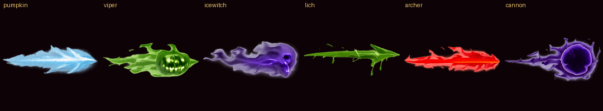
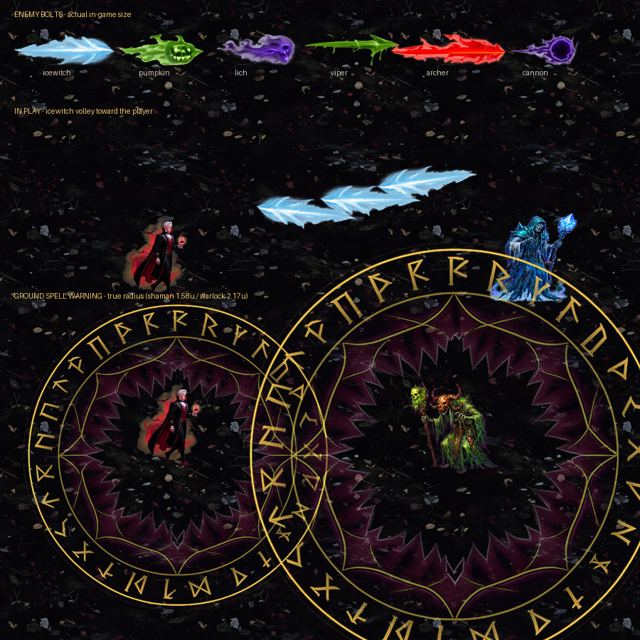

六種去背後的樣子
等你確認
- 為什麼分開做
- 六隻遠程敵人的flavour差很多（冰、咒火、亡靈、毒、火箭、混沌）。共用一顆會讓玩家分不出哪一發比較痛——混沌魔炮 50 傷跟咒術南瓜 16 傷長一樣就是誤導
- 成本
- 六種畫在同一張彙整圖裡一次生成，$0.2 而不是六支影片的 $1.92。彈幕在畫面上只有 30 像素大，做成 14 幀動畫看不出差別
- 朝向
- 全部朝右畫，程式轉到飛行方向（跟玩家武器同一套約定）
五項裡先出這兩項——一個是最小最快的元素，一個是最大最靜態的，兩端都看過再決定要不要往下做。還沒進遊戲。


法陣是環狀的，去背的「邊界連通」判定切不到被圍起來的中心，圓心又留成不透明近黑（alpha 255）。大蒜光環、迷霧光環、血月獠牙都中過同一招，這是第四次。凡是環狀素材，去背後第一件事就是量中心的 alpha。
這一輪 2 張生圖 ≈ $0.4（含 OpenAI 去背）；累計約 $6.4。沒有遇到 Grok 額度不足。
剩下三項（自爆引信與爆炸、衝刺殘影、召喚法陣）還沒動，等這兩項過了再做。